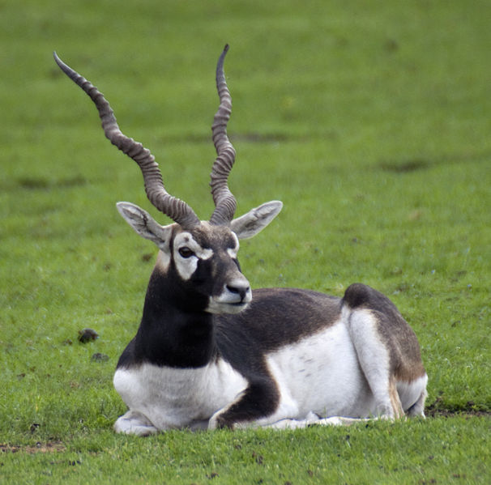
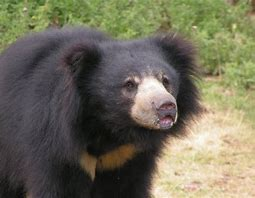
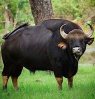
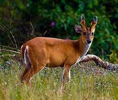
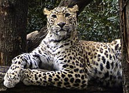

Black Buck

The blackbuck (Antilope cervicapra), also known as the Indian antelope, is an antelope found in India, Nepal and Pakistan. The blackbuck is the sole extant member of the genus Antilope. The species was described and given its binomial name by Swedish zoologist Carl Linnaeus in 1758. It inhabits grassy plains
-
- Family: Bovidae
- Genus: Antilope
- Kingdom: Animalia
- Species: A. cervicapra
Sloth Bear

The sloth bear (Melursus ursinus) is a myrmecophagous bear species native to the Indian subcontinent. It feeds on fruits, ants and termites. It is listed as Vulnerable on the IUCN Red List, mainly because of habitat loss and degradation. It has also been called "labiated bear" because of its long lower lip and palate used for sucking up insects. It has a long, shaggy fur and a mane.
-
- Family: Ursidae
- Genus: Melursus
- Kingdom: Animalia
- Species: M. ursinus
Gaur

The gaur (Bos Gaurus), also known as the Indian bison, is a bovine native to South and Southeast Asia, and has been listed as Vulnerable on the IUCN Red List since 1986. The global population was estimated at a maximum of 21,000 mature individuals in 2016. It has declined by more than 70% during the last three generations.
-
- Family: Bovidae
- Genus: Bos
- Kingdom: Animalia
- Species: B. gaurus
Indian muntjac

The Indian muntjac (Muntiacus muntjak), also called the southern red muntjac and barking deer, is a deer species native to South and Southeast Asia. It is listed as Least Concern on the IUCN Red List. This muntjac has soft, short, brownish or greyish hair, sometimes with creamy markings. It is an omnivore and eats grass, fruit, shoots, seeds, bird eggs and small animals.
-
- Family: Cervidae
- Genus: Muntiacus
- Kingdom: Animalia
- Species: M. muntjac
Indian Panther

The Indian leopard (Panthera pardus fusca) is a leopard subspecies widely distributed on the Indian subcontinent. The species Panthera pardus is listed as Vulnerable on the IUCN Red List because populations have declined following habitat loss and fragmentation, poaching for the illegal trade of skins and body parts, and persecution due to conflict situations.
-
- Family: Felidae
- Genus: Panthera
- Kingdom: Animalia
- Species: P.p. fusca